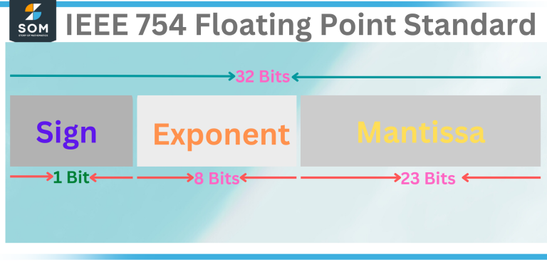

Mem
This is a documentation of my journey while reading the book : "Rust for the IoT- Joseph Faisal"
Future me, this was once hard and fun... laugh all you want.
chapter_1_notes
An Embedded system is a system that has been purposefully built for a certain application. It is not a general purpose system.
Though this view is not absolute.
They deal with constrained environments, both hardware and software eg ;
- slow cpus to save power
- lack of support for certain peripherals.
[incant] Now with this constrained environment, the system might not support certain peripherals or certain software. Such a situation forces the developers to come up with really unique APIs. Can modular wasm solve anything here? What is the problem/ unique APIs kill the dream for a programmable world.
JTAG - a physical interface to help you interact with the microprocessor using developmet tools like debuggers and testers
Problems
- Cross development is hard and somehow incomplete
- compiling
- testing
- Debugging
- dsds
Random
Yes we are in IoT, but should that microwave be connected to the net?
Which domains are dependent on IoT?
Which domain has products that churn the market?
Which domain is iteresting to you?
Domains
- Industrial IoT (IIoT): Focuses on improving efficiency and automation in industries through sensors, data analytics, and connectivity. Examples include predictive maintenance in manufacturing and asset tracking in logistics.
- Healthcare IoT: Involves wearable devices, remote patient monitoring, and smart medical equipment to improve patient care and health outcomes.
- IoT in Energy Management: Includes smart grids, energy monitoring systems, and devices to optimize energy consumption in homes, buildings, and industries.
- Swarm contruction robotics - Like Bill-E
- IoT in Space Exploration: Involves satellite communication, remote planetary exploration, and data collection from space-based sensors.
- Millitary
Why Rust now?
- asm itegration
- wasm integration
- high level to be even be used in cloud applications... unlike C
Communication
- Https
Discovery Book
SoC == microcontroller
sensors ==> SoC ==> Actuators(implementors of code eg arms)
SoC != General purpose Computer(eg rasberry-Pi). SoC is more specialized, might have lesser number of componets, less cost, less resource intensive.
Power consumption. Most microcontrollers consume a fraction of the power of a full blown processor. For applications which run on batteries, that makes a huge difference.
Setups
Tools
Generic
-
Rustup will help you install, modify and inquire toolchains. Master it.
-
Master Cargo
-
Cargo Binutils will help you integrate LLVM tools with cargo. nm, LLD(rust-lld), objdump, size, readobj.
-
Just mess aroud with LLVM and GNU tools. You need them BAD.
-
Cargo generate will help you pass templates to your team members
Specific
- gdb-multiarch. (when actually debugging, refer to the specific gdb subset command eg arm-none-eabi-gdb)
- openocd (software that sits in between the GDB(in hosted environment) and Microcontroller-Debugger(in embedded environment))
- qemu-system-arm (this is not just Qemu)
no std and Runtimes
Turns out every language has a runtime. Who knew? Even C and Rust.
The Runtime takes care of things like panic handling, stack protection, order of functions called before main.
Lib core is part of Std lib.
In Rust, the runtime is part of the std lib.
The compiler can work without the lib core and stdlib. As long as you satisfy all the language items required by the compiler. If you check the lib-core code, you will see things labelled as language items. This is how the compiler knows the position of code that satisfies the behavior of Rust itself
I have not understood the concept of lang items. Read about them here
I have not understood the Rust Runtime. I do not how they are intertwined with the C runtime. I really don't know. But this page has clues
Anyway, when we stop depending on the std library...
- you have to include your own init code before main()
- you have to implement your own stack overflow protection mechanism
- You have to implement your own std fuctions.
- You may create your heap byte-allocator and iterface it with the Rust Alloc crate. That way you get to perform built-in Rust heap operations like Box Operations and vectors (use collections crate)
Udev Rules
[to_add]
In linux, everything is a file. Soo when devices are connected, commuication between them and other software is through files, These files get stored in the directory ; /dev/. For example the /dev/CPU, /dev/bus, /dev/hard-disk....
This fies are for communication purposes ONLY. They are NOT configuration files.
To configure the devices, you use a software called 'user-space Device Manager' (udev). You can configure the names of a device, its unique oparameters, the permissions to be implemented, how clean=up happens after the device is unplugged...
The actual configuration files get stored in the /etc/udev/rules.d/ directory
debugging
If you are using an Emulator such as Qemu, You can follo this steps :
- Run the emulator under 2 necessary configs. The Emulator should start at a pause. The Emulator should listen for GDB messages at a specific port. For example :
- Run the GDB to debug a specific file. And make it send and receive messages from the same port as that specified by the Qemu emulator
Abstracting the Board
Before controlling matter, you need to understand it, abstract it effectively and find a way to actuate the abstractions. The naming does not matter, only the intention of the abstraction is what matters.
PAC (Peripheral Access Crate)
This library abstracts the registers and MMIO memory addresses in an intuitive way.
It may present the Registers as structs with sensible names, you do not have to worry about accessing addresses using hexdecimal notations and perform raw pointer operations... this makes your code more portable.
This crate does not expose functionalities of the hardware, it just gives you access_variables and the different methods of accessing and manipulating those access variables.
Micro-architecture Crate
This crate abstracts the micro-controller itself. (Without the board). It abstract things like the ISA implementation, the inbuilt circuits like Timer, Interrupt controller, FPU, extensions.
This crate is as low-level as the PAC... it is just the PAC abstracts peripherals while the MAC(Micro-architecture Crate) abstracts the MCU and its inbuilt circuits.
Additionally, unlike the PAC, it exposes the different functinalities of the MCU such as interrupt handling mechanisms.
MACs are typically provided by the MCU manufacturers
HAL (Hardware Abstraction Layer)
This crate exposes the generic API for a piece of peripheral. It exposes functionality. It uses the PAC and MAC libraries as its building blocks.
The HAL is more generic than the MAC and PAC crates.
For example, if we had the UART as our piece of hardware, then the PAC will expose the address 0x200_000 as the FIFO control register. The HAL register will then use that register variable to build the 'enable FIFO' function.
Peripheral Driver Crates
This crate is a highly specific HAL for a certain piece of hardware/perioheral. This is no longer a generic HAL...it is a generic HAL + other new fuctionalities that are manufacturer-unique
Board Crate
The board crate goes a step further at being ALL-encompassing. It tries to abstract the whole development board by combining the relevant PACs, MACs, HALs and Driver crates into one crate.
Utility Crates
These crates may not directly interact with hardware but provide utility functions and data structures that can be helpful in embedded development. For example, crates for working with fixed-point arithmetic, bit manipulation, or data serialization.
Choosing Hardware
This section covers all matters hardware. Which Chips to use, which ISAs to use, when to use certain hardware... things like those.
Micro_controller vs General Purpose Computer
A microcontroller in this case can also be called a SoC. System on chip.
An SoC is a single PCB with all required components attached.
A general Computer might also have all components attached to the same PCB, but chances are that it will have many PCBs.
Differences
| SoC | GPC |
|---|---|
| has one PCB | Has at least one PCB |
| Has only the components that are needed by a certain application | Has Components that might be needed by any application |
| The Processor might lack certai functionalities, eg Floating point operations | Processor has many functionalities |
| Cheap (few components) | Less Cheap (many components included) |
| Uses less power because: less components | Uses more power |
When to use SoC
- When the operation is critical. eg in a medical device or a braking system. This is because A general purpose computer and OS usually has many software components which share the computer's processing resources. This makes it harder to guarantee execution of a program within tight time constraints.
- Cost. A microcontroller is much cheaper than a general purpose computer. Not only is the microcontroller cheaper; it also requires many fewer external electrical components to operate. This makes Printed Circuit Boards (PCB) smaller and cheaper to design and manufacture.
- Power consumption. Most microcontrollers consume a fraction of the power of a full blown processor. For applications which run on batteries, that makes a huge difference.
- Reliability ; reduced components == reduced complexity == easy to maintain and trouble shoot
When to avoid SoC
- When running complicated algorithms. The processor of the SoC may lack complicated features. (eg floating point operations), such that if you include these operations, the CPU will have to do many cycles that end up consiming power.
- When you expect to run general programs. Use an soC when the program that you want to run is Specialized
Communication
Protocols
Which communication protocols get used? Why? Why not?
HTTPS
- [undone] read about HTTPS. This is HTTP, but the passed messages get encrypted.
- HTTPS in request-response based, the client sends a request to the server, the server returns a response. Communication is bi-directional.
- this protocol is mostly used by browsers to website servers.
When to use https
- when communication is not meant to be continuous BUT initiated by client.
- when communication is meant to be Bi-directional.
- When data is NOT time critical
Why avoid Https
- encryption is processor and RAM expensive.
- encryption is memory expensive, extra bytes to the frame. The HTTPS protocol adds some overhead to each data packet due to encryption and additional headers. In applications with limited bandwidth, this overhead can be a concern.
- HTTPS connections can introduce additional latency, especially when establishing the secure connection. For applications where real-time responsiveness is essential, such as industrial automation or remote control systems, this latency can be problematic.
- IoT devices often need to maintain persistent connections to servers. HTTPS connections, by nature, are request-response-based, which means they are not ideal for continuous streaming or push-type communication. This can lead to inefficiencies when devices need to send or receive data frequently.
- IoT devices often send data that doesn't require a response from the server. In these cases, HTTPS can be seen as overkill because it establishes a bidirectional connection, which consumes more resources than necessary.
To address these challenges, IoT implementations may consider alternative communication protocols and strategies:
MQTT (Message Queuing Telemetry Transport): MQTT is a lightweight publish-subscribe messaging protocol designed for IoT. It is often more efficient and less resource-intensive than HTTPS for certain IoT scenarios.
CoAP (Constrained Application Protocol): CoAP is a lightweight protocol designed for resource-constrained IoT devices. It's efficient for low-power, low-latency applications.
WebSocket: WebSocket provides full-duplex communication channels over a single TCP connection and is more suitable for real-time, bidirectional communication.
Edge Computing: Some IoT applications benefit from processing data at the edge (i.e., on the device or a local gateway) before sending it to a central server. This can reduce the need for continuous HTTPS connections.
Hybrid Approaches: In some cases, a hybrid approach may be suitable, where critical real-time data is sent over a low-latency protocol like MQTT, while less critical data is sent over HTTPS.
Books
Blogs
x.1 Websites/ Online Links
-
embedded reddit wiki {without_rust}
-
Books created by the Rust Embedded Working Group {with_rust}
-
Awesome Embedded Rust Resources {with_rust}
-
More Books and resources {with_rust}
x.2 Advanced
- Embedonomicon - The nitty gritty details when doing embedded programming in Rust. {with_rust}{dark_magic}
- Rust + Esp32 book
x.3 Beloved
- Rcore tutorial
- Philip OS blog
- Stephens blog
- The Discovery Book
- The Rust Embedded Book
- Debugonomicon
Repos minus the tool or book
Emulators and Simulators
- Qemu Emulator
- Microbit Simulator by Microsoft
Tools and Libraries
Tools :
- Tock OS
- Sel4
- Probe.rs
- Gbd - multiarch
- cargo-binutils : a collection of Cargo subcommands that make it easy to use the LLVM tools that are shipped with the Rust toolchain. We will not use GNU binutils
- PlatformIO
- Open On-Chip Debugger (OpenOCD)
Libraries
- Probe.rs (tool)
- cargo-binutils (tool)
- Tock OS (tool)
- cargo-embed (tool)
- Embassy (tool): The next-generation framework for embedded applications. With concurrency included. You no longer need RTOS. A solid framework
- Ferrous Systems Tooling
- minicom tool
Reddit convos that deserve medals
- Embedded Rust : Blog mentions tools and how those tools shine
problems_facing_embedded_devs
This are problems facing embedded devs. We hope to solve them some day.
All of the Information was obtained from a few posts across reddit, internet for real humans.
reference : this_page
-
Poor Documentation. It is hard to document a big project.
-
It sucks to inherit legacy code.
-
It sucks to inherit poorly documented code. Especially code whose modules are interrupt-driven
-
It sucks to use old inconvenient tools that have been passed with time, tools that only get used because compatibility and legacy preferences by the development team.
-
Embedded Engineers don't appreciate writing web/mobile apps. Web/mobile app development is too much noise, we want to build bare minimum websites...or none at all. A CLI app is enough.
-
SSL sucks
-
Some Electrical Engineers write code to get things quickly done... Not clean maintainable code. They are okay with C ad C++ and the broken tooling. Quick fixes everywhere. "From a 10,000 foot view, it looks like the industry is locked into C and with that C causes a lot of problems. Worse yet the firmware engineers do not know what problems C causes, because they have little or no experience in code bases outside of embedded. This often leads to dirty code bases that are not organized well or tested well. Likewise, there are TONS of run time errors in every embedded project I've seen. On the systems C++ level, the goal is to turn run time errors into compile time errors to minimize that hassle. This seems like a foreign concept to many firmware engineers so they're stuck struggling on these kinds of problems."
-
Expensive proprietary tools that are half-assed, fremium-based, non_standard(unnecessarily unique), replicas and unmaintained. And they sometimes get abandoned by the makers.
-
Poor tools."Every manfacturer makes their own re-skinned version of Eclipse" to upstream tools designed for big machine development not playing nice with anything embedded, buggy debug adapters, buggy drivers, etc.
-
Cross Building, cross development, debugging, testing and deploying sucks... it is just tool after tool, configuration after configuration. Every company has their way of doing it... that sucks.
-
Makefiles, bashscripts, python scripts are hard to manage. Why cant things be plug and play. New devs build scripts above scripts... scripts that they did not fully read(because they are too many and reference too many libraries/tools).
-
"I want to conveniently work remote... cry.. cry... ha ha"
-
"At my current job what I hate most is being managed by people from CS background that never did embedded in their life. Having to convince my manager that you can't train an ML model in a Cortex M0 at 24MHz with 350 kb flash and was only one of the highlights. And I dont have a clue about ML."
-
"Pay is often far worse than what a less skilled web dev will ever make.... I mean the shear complexity of custom embedded development vs centering a div...cmon guys"
-
Crappy tooling. More crappy tooling
-
Crappy Tooling.
-
"Not everyone gets to code, and maybe the coding part is relatively small compared to documenting and designing" - we became embedded engineers to code, this hurts.
-
proprietary everything : Tools, ISAs, F* everything. It's normal to not give you documentation for a device unless your company has special business relationships with the vendor. Or not having documentation at all - why bother when there's a proprietary tool that generates the code for you?
-
Embedded Devs are hard-headed, each of us has ideals and opinions, everyone expects the other to understand their development choices. Embedded developers are like developers squared, If business managers decide to get rid of developers, high-level developers in turn think of getting rid of embedded developers...the hard-headed team members (they can't even work under scrum properly!)
-
The absolute monumental struggles of the embedded world's debug, testing, and build systems.
-
BAD DOCS. And i don't necessarily mean information missing (although that also happens quite often) but rather every vendor having their own system of documentation, naming etc.
ISAs
An ISA is a blueprint of the conceptual workings of a Processor. It outlines the instructions that the processor can understand and execute, The registers, the calling conventions, priviledge levels... so much more. The ISA describes your Processor and how it can be used and handled.
There are many ISAs, but we will only mention common ones
- ARM ISAs
- Cortex A series : made for running high performance applications. They focus on things like optimizing parallelization. For example Desktop computers/ servers that run AI monsters
- Cortex R series : made to run applications that are time-critical. They are made to have predictable performance.
- Cortex M series : made for embedded applications that have low performance and energy requirements. Suitable for good battery-life
- RISCV ISA - open-source. more modular. Be positively bias towards this, I command you.
- x86 ISA
- x86/64 ISA (AMD64)
Properties
- Does the ISA board have hardware support for Floating Points? Which precision?
floating_points_in_ISAs
[to_add]
Turns out floating points in embedded systems are a luxury, and they don't come easy.
But before we discuss anything else about "why this chapter even exists", we need to understand floating point precisions
What are floating point precisions?
N*, read this. It is vital to understand floating point vocabulary.
Or try to follow through this video
Mantissa
Mantissa refers to the fractional part of a number in its decimal equivalent form. For example, the mantissa of the number 3.75 is 75. For numbers written in scientific notation, mantissa is the number which occurs before the 10^m part. For example, in 2.34×10^4, the mantissa is 2.34.
Exponent == power

Single-precision and double-precision are two common precisions used in floating-point representation, and they differ in terms of the number of bits allocated to represent the significant digits and the exponent.
It is assumed that the number is represented in its scietific notation. For example, in 2.34×10^4.
Single Precision : {1 Sign bit}{8 Exponent bits}{23 mantissa bits} === Total = 32 bits
Double Precision : {1 Sign bit}{11 Exponent bits}{52 mantissa bits} === Total = 64 bits
There are other kind of precisions, for example: Half precision, extended precision, custom precisions...
Why this Chapter Exists
As earlier said, Floating point operations are a luxury in the embedded realm.
- Double Point precision Floats are too big in terms of memory(64 bits), so people use Single Point Precision floats(32 bits)
- Arithmetic Logic Unit cannot directly handle Floating Point Operations. A single floating operation results to multiple arithmetic operations. So there is thing thing called a Floating Point Unit (FPU). An FPU is a special hardware/software that is dedicated for Floating point operations. An FPU is faster and more resource-efficient than an ALU when it comes to executing foating point operations. So yea, You either get a Processor that has an ALU only, and suffer slow expensive float operations OR You get a processor that has ALU + FPU and get faster and less expensive floating point operations.
Base line : The FPU is extra hardware. No_FPU == time-wasting + resource-wastage
- Increased Code Size: Implementing floating-point operations in software can significantly increase the code size of embedded applications. This is a concern in embedded systems with limited program memory (flash) as it can lead to space constraints.
- Precision Trade-offs: Embedded systems often require predictable and deterministic behavior. Floating-point arithmetic can introduce rounding errors and precision issues that may not be acceptable in safety-critical or real-time applications. Fixed-point arithmetic is often preferred for these scenarios.
- Portability: Code that relies on floating-point operations may not be easily portable between different embedded systems, especially if they have varying levels of floating-point support or different architectures.``
Flash Memory
Flash memory is a non-volatile semiconductor memory technology that is widely used for data storage in a variety of electronic devices, from USB drives and memory cards to smartphones, tablets, solid-state drives (SSDs), and embedded systems. Flash memory is known for its ability to retain data even when power is removed, making it suitable for both storage and data transfer applications.
NAND and NOR Flash: There are two primary types of flash memory: NAND flash and NOR flash. NAND flash is used for data storage in devices like SSDs and USB drives due to its higher density and cost-effectiveness. NOR flash is used for code storage and booting in devices like embedded systems and microcontrollers because of its faster read times.
Erase Blocks: Flash memory is organized into erase blocks, which are the smallest units that can be erased and reprogrammed. Erasing and writing data to a flash memory cell involves changing its electrical charge
Cell Types: Flash memory comes in various cell types, with the two most common being Single-Level Cell (SLC) and Multi-Level Cell (MLC). SLC stores one bit of data per cell, providing high speed and durability but at a higher cost. MLC stores multiple bits per cell, making it cost-effective but with slightly lower performance and endurance.
RAM
RAM, which stands for Random Access Memory, is a type of volatile computer memory that serves as the primary working storage for data and program instructions that a computer's CPU (Central Processing Unit) can access quickly.
The RAM is made up of memory Cells.
Address Lines and Data Lines: RAM chips have address lines and data lines that connect them to the CPU and other parts of the computer. The address lines are used to select specific memory cells, while the data lines transfer data in and out of RAM.
Overally a combination of the memory cells and the Address and Data lines form an Integrated Circuit
DRAM vs SRAM
Before discussing DRAM vs SRAM, Let's first get some buzzwords out of the way.
1. Transistor
A semiconductor is a type of material that has electrical conductivity properties between those of conductors (such as metals) and insulators (such as non-metals). Semiconductors are characterized by their ability to conduct electricity under certain conditions but not others, making them crucial components in the field of electronics. Examples of semiconductors include Silicon and Gallium Asenide.
To make a semiconductor become more conductive, you change its structure through a process called n-type doping. Doping can be done by adding an impurity like phosphorous to the silicon. But in modern computers, instead of conducting hemical reactions, the silicon structure is changed through ion implantation. My knowledge ends there... research on your on. i ain't reading that.
To reduce the conductivity, yiou still use that ion implantation black-box magic.
A transistor acts as a switch and amplifier.
Watch these two videos :
Types of Transistors: There are two main types of transistors: bipolar junction transistors (BJTs) and field-effect transistors (FETs). Each type operates differently and has distinct characteristics:
BJTs: These transistors rely on the movement of charge carriers (electrons and holes) to control current flow. BJTs come in two types: NPN (negative-positive-negative) and PNP (positive-negative-positive).
FETs: FETs use an electric field to control current. They come in various forms, including MOSFETs (Metal-Oxide-Semiconductor FETs) and JFETs (Junction Field-Effect Transistors).
MOSFETs are commonly used in microcontrollers and digital integrated circuits. They are preferred for switching applications due to their low power consumption, fast switching speeds, and high input impedance. They are mostly used in Embedded ICs
Both Field-Effect Transistors (FETs) and Bipolar Junction Transistors (BJTs) are used in various electronic applications, including microcontrollers (MCUs) and microprocessors. The choice between FETs and BJTs depends on the specific requirements and design considerations of the circuit. Here's a brief overview of their typical usage in MCUs:
Field-Effect Transistors (FETs):
MOSFETs (Metal-Oxide-Semiconductor FETs): MOSFETs are commonly used in microcontrollers and digital integrated circuits. They are preferred for switching applications due to their low power consumption, fast switching speeds, and high input impedance. MOSFETs are often used in digital logic gates, memory cells, and output drivers for MCUs.
CMOS Technology: Many modern microcontrollers are built using complementary metal-oxide-semiconductor (CMOS) technology, which relies on both n-type and p-type MOSFETs. CMOS technology provides low power consumption and high noise immunity, making it suitable for battery-powered and digital applications.
Low Power Modes: MCUs often use MOSFETs in low-power modes to disconnect or minimize the power consumption of peripheral components when they are not in use, helping to extend battery life.
Bipolar Junction Transistors (BJTs):
NPN and PNP BJTs: BJTs, both NPN and PNP types, are used in analog and mixed-signal microcontroller applications. They are commonly found in analog amplifiers, voltage regulators, analog-to-digital converters (ADCs), and other analog components.
Amplification: BJTs are well-suited for amplification tasks in analog circuits. They can be used to amplify weak signals in analog sensors, communication interfaces, and audio circuits.
Switching: While MOSFETs are preferred for digital switching due to their low power consumption, BJTs can still be used for low-frequency switching applications in MCUs.
In summary, both FETs (specifically MOSFETs) and BJTs have their roles in microcontroller and microprocessor applications:
MOSFETs are commonly used in digital MCUs for logic, memory, and low-power switching.
BJTs, particularly NPN and PNP types, find their place in analog and mixed-signal circuits within MCUs, where amplification and analog signal processing are required.
The choice between these transistor types depends on the specific functionality and requirements of the MCU's application. Modern microcontrollers often integrate a combination of both FETs and BJTs within their design to cater to diverse needs, making them versatile components for a wide range of applications.
For Comparison between BJT, MOSFET and IGBT, watch this video
DRAM Vs SRAm
GPIO Pins
In the context of microcontrollers and embedded systems, a GPIO (General Purpose Input/Output) pin is a type of normal pin, but its functionality can be configured by software to serve either as a digital input or a digital output. Here's how a GPIO pin is different from a "normal" or fixed-function pin:
Configurability: GPIO pins are configurable, which means you can change their function between input and output using software commands. You have the flexibility to read the state of external devices or sensors when configured as inputs and control external devices when configured as outputs. In contrast, normal or fixed-function pins typically have a predefined purpose and cannot be reconfigured.
Versatility: GPIO pins are "general purpose," meaning they are not dedicated to a specific function by default. They can be adapted to suit a wide range of applications, making them versatile for various tasks. Normal pins may have a specific, fixed function, such as power supply, ground, or dedicated communication protocols like UART, SPI, or I2C.
Usage Scenarios: GPIO pins are commonly used for interfacing with the external world in embedded systems, including reading sensors, controlling actuators, and communicating with other devices. Normal pins, on the other hand, have predefined roles and are often used for specific tasks like power supply, clock input, or communication with peripherals.
Programming Control: You have fine-grained control over GPIO pins through software, allowing you to set their state (high or low), read input values, and configure pull-up or pull-down resistors. Normal pins may not offer the same level of programmable control because they are designed for specific purposes.
Flexibility: GPIO pins can be used for a wide range of purposes within the constraints of the microcontroller's specifications. This flexibility enables developers to design and implement custom solutions for various applications. Normal pins have fixed roles that may not be suitable for all use cases.
Interrupt Handling: GPIO pins can often be configured to generate interrupts when their state changes, which can be used for event-driven programming. This is a feature not commonly found in normal pins with predefined functions.
In summary, a GPIO pin is a type of normal pin found on microcontrollers and similar devices, but it stands out due to its configurability and adaptability. While normal pins have fixed functions, GPIO pins can be programmed to perform a wide range of tasks, making them essential for interfacing with external devices and sensors in embedded systems and microcontroller-based projects.
Accelerometer
An accelerometer senses the change in velocity of an object in a certain direction(axis line). ie the acceleration of an object in a certain direction.
Accelerometers have a wide range of applications. They are used in smartphones and tablets to detect screen orientation (portrait or landscape), in fitness trackers to measure physical activity and steps taken, in automotive airbag systems for crash detection, in aerospace for navigation and control, in industrial machinery for vibration analysis, and in scientific instruments for research purposes, among many others.
Sensing Mechanism: Accelerometers use various sensing mechanisms to detect acceleration. Common types include piezoelectric accelerometers (which use piezoelectric crystals), capacitive accelerometers (which rely on changes in capacitance), and microelectromechanical systems (MEMS) accelerometers (which use tiny mechanical structures).
It is better to watch some youtube videos in order to visualize the paragraphs below :
The sensing mechanisms used in accelerometers are at the heart of how these devices detect acceleration. Here, I'll explain in more detail how each of the common types of accelerometers works:
Piezoelectric Accelerometers:
Principle: Piezoelectric accelerometers rely on the piezoelectric effect, which is the property of certain materials (usually crystals or ceramics) to generate an electrical voltage when mechanical stress or pressure is applied to them.
Operation: Inside a piezoelectric accelerometer, there is a piezoelectric crystal. When the accelerometer is subjected to acceleration, the crystal experiences mechanical deformation or stress. This deformation generates a voltage across the crystal, which is proportional to the applied acceleration. This voltage can then be measured and used to determine the acceleration.
Advantages: Piezoelectric accelerometers are known for their high sensitivity and ability to measure rapid changes in acceleration. They are often used in applications requiring high-frequency measurements, such as impact testing and vibration analysis.
Limitations: They are relatively delicate and may not withstand high shock or overload conditions without being damaged.
Capacitive Accelerometers:
Principle: Capacitive accelerometers work based on changes in capacitance. Capacitance is the ability of a capacitor (composed of two conductive plates separated by a dielectric) to store electrical charge.
Operation: In a capacitive accelerometer, there are typically one or more sets of fixed and movable capacitive plates. When the accelerometer experiences acceleration, the movable plates move relative to the fixed plates due to the inertial forces. This movement changes the distance between the plates, which alters the capacitance. The change in capacitance is directly proportional to the acceleration applied to the sensor.
Advantages: Capacitive accelerometers are often more robust and less sensitive to temperature changes compared to piezoelectric accelerometers. They can be used in a wider range of environmental conditions.
Limitations: They may have lower sensitivity compared to piezoelectric accelerometers and are typically better suited for lower-frequency applications.
MEMS Accelerometers (Microelectromechanical Systems):
Principle: MEMS accelerometers use tiny mechanical structures, typically etched or fabricated on a silicon wafer, to detect acceleration.
Operation: Inside a MEMS accelerometer, there is a small mass attached to a tiny set of springs. When subjected to acceleration, the mass moves relative to the rest of the sensor due to inertia. This movement is detected by measuring changes in electrical properties, such as capacitance or resistance, caused by the displacement of the mass.
Advantages: MEMS accelerometers are widely used due to their small size, low cost, and suitability for integration into electronic devices like smartphones, wearables, and automotive systems. They offer a good balance between sensitivity and cost-effectiveness.
Limitations: MEMS accelerometers may have limited measurement range and accuracy compared to some specialized accelerometers. They are typically used in applications that do not require extremely high precision.
In summary, accelerometers use various sensing mechanisms to detect acceleration, including piezoelectric crystals, changes in capacitance, or tiny mechanical structures in the case of MEMS accelerometers. Each type of accelerometer has its own strengths and weaknesses, making them suitable for different applications based on factors such as sensitivity, cost, size, and environmental conditions.
Gyroscope
Watch youtube videos bruv... no amount of words can explain what a gyroscope is.
A gyroscope, often referred to simply as a "gyro," is a sensor or device that measures and maintains orientation and angular velocity (rate of rotation) in three-dimensional space. Gyroscopes are used to detect changes in an object's orientation or rotational movement and are essential components in various applications, including navigation systems, robotics, aerospace, and consumer electronics.
Here are some key points about gyroscopes:
Angular Velocity Measurement: Gyroscopes are designed to measure the rate of rotation or angular velocity around one or more axes (typically three axes: X, Y, and Z) in three-dimensional space. They provide information about how fast an object is rotating and in which direction.
Sensing Mechanism: Gyroscopes use different sensing mechanisms to detect angular motion. The most common type is the MEMS (Microelectromechanical Systems) gyroscope, which employs tiny mechanical structures, such as vibrating or oscillating masses, to sense angular motion. Optical, laser, and fiber-optic gyroscopes are also used in more specialized applications.
Applications: Gyroscopes are used in a wide range of applications, including:
Inertial Navigation: In combination with accelerometers, gyroscopes are used for inertial navigation systems, helping vehicles, aircraft, and spacecraft determine their orientation and track their movement without relying on external references like GPS.
Stabilization: Gyroscopes are used to stabilize cameras, drones, and other equipment, ensuring that they remain level and steady even when subjected to external forces or movements.
Robotics: Robots use gyroscopes for balance and orientation control, allowing them to maintain stability and adjust their position accurately.
Virtual Reality (VR) and Augmented Reality (AR): Gyroscopes are used in VR and AR headsets to track the user's head movements and provide a more immersive experience.
Gaming Controllers: Some gaming controllers, like those for gaming consoles and smartphones, incorporate gyroscopes to enable motion sensing and interactive gameplay.
Aerospace: Gyroscopes are critical components in aircraft and spacecraft navigation systems, helping maintain stable flight and orientation.
Consumer Electronics: Modern smartphones and tablets often include gyroscopes to support features like screen rotation and motion-controlled gaming.
Types of Gyroscopes: Besides MEMS gyroscopes and optical gyroscopes, other types of gyroscopes include:
Ring Laser Gyroscopes: These are based on the Sagnac effect and use the interference of laser beams traveling in opposite directions to detect rotation.
Fiber-Optic Gyroscopes: These use the interference of light within optical fibers to measure rotation.
MEMS Gyroscopes: MEMS-based gyroscopes are widely used due to their small size, low cost, and suitability for integration into consumer electronics and portable devices.
Gyroscopes play a crucial role in maintaining stability, providing accurate orientation information, and enabling precise control in a wide range of applications. They are essential for tasks where knowing an object's orientation or rate of rotation is critical to achieving a desired outcome.
Magnetometer
A magnetometer is a sensor or instrument used to measure the strength, direction, and sometimes the variation of a magnetic field. It is a crucial tool in various fields, including geophysics, navigation, and consumer electronics. Magnetometers are used to detect and quantify magnetic fields produced by natural sources, such as the Earth's magnetic field, or artificial sources, such as magnets and electrical currents.
Here are some key points about magnetometers:
Measurement of Magnetic Fields: Magnetometers are designed to measure the strength of magnetic fields, which are typically described in units of tesla (T) or gauss (G). They can measure both the total strength of a magnetic field (scalar measurement) and the direction of the magnetic field (vector measurement).
Applications: Magnetometers have a wide range of applications, including:
Geophysics: In geophysics, magnetometers are used to study the Earth's magnetic field for various purposes, including mineral exploration, archaeological surveys, and mapping geological structures.
Navigation: In navigation, magnetometers are used in magnetic compasses and electronic compasses (e-compasses) to determine direction. They are especially useful in applications where GPS signals are unreliable or unavailable, such as underwater navigation or inside buildings.
Consumer Electronics: Magnetometers are commonly found in smartphones and tablets. They are used to provide information about the device's orientation, enable features like auto-rotation of the screen, and support augmented reality applications.
Aerospace and Defense: Magnetometers are used in aircraft, spacecraft, and military applications to detect and compensate for changes in the Earth's magnetic field, which can affect navigation and targeting systems.
Archaeology and Metal Detection: Magnetometers are used to locate buried objects, such as archaeological artifacts or underground utilities, by detecting disturbances in the Earth's magnetic field caused by ferrous materials.
Magnetic Anomaly Detection (MAD): In military and anti-submarine warfare, specialized magnetometers are used for MAD to detect the magnetic signature of submarines beneath the ocean's surface.
Types of Magnetometers: There are various types of magnetometers, including:
Fluxgate Magnetometers: These magnetometers use the principle of electromagnetic induction to measure magnetic fields. They are known for their high accuracy and are used in scientific research and geophysical surveys.
Hall Effect Magnetometers: These magnetometers utilize the Hall effect, which is the generation of a voltage perpendicular to the flow of current in a conductor exposed to a magnetic field. They are often used in electronic compasses and consumer devices.
Proton Precession Magnetometers: These instruments use the precession of protons in a magnetic field to measure its strength. They are highly sensitive and used in geophysical exploration.
SQUID (Superconducting Quantum Interference Device) Magnetometers: SQUID magnetometers are incredibly sensitive and capable of measuring extremely weak magnetic fields, making them valuable in fields such as biomagnetism and materials science.
The choice of magnetometer type depends on the specific application and the required sensitivity and accuracy. Magnetometers are essential tools for understanding and utilizing the Earth's magnetic field and for a wide range of technological and scientific purposes.
Stupid Cautions
I have never worked with hardware before. I have never worked with electricity. Electricity is magic to me.
These are things I did not know that I needed to watch out for.
- Check the nominal voltage for a device/board/micro-controller/processor pins. Pumping too much may cause frying of things. Pumping too low may cause malfunctions, overheating and other shenanigans. Just supply the right voltage level kid.
Debugging
References :
- long video (debugging series)
Debugging is a VERY IMPORTANT process. It is the process of finding bugs in code by inspecting the program's flow (cause and effect). Almost like real-time observation of how cause and effect happens during execution.
You can do this by running the program in a step-wise manner OR EVEN inspecting the stepwise-logs after the program has executed. The point being that you are checking all the cause-effects that happened while the program executed.
Embedded debugging is tricky. Here is a short book on debugging for embedded systems while working with Rust --> Debugonomicon
Shortnotes from the above mentioned book (Debugonomicon):
Debugging Protocol
Protocol between the Debugger and target MCU.
A debug protocol, in the context of software development and embedded systems, is a set of rules and conventions that define how a debugger (debugging tool or software) communicates with the target system being debugged. It establishes a standardized way for the debugger to interact with the target system's hardware or software to perform various debugging tasks, such as setting breakpoints, reading memory contents, controlling program execution, and retrieving debugging information.
Key aspects of a debug protocol include:
Communication Protocol: It specifies the communication medium and the data format used for exchanging information between the debugger and the target system. Common communication mediums include serial ports, USB, Ethernet, JTAG (Joint Test Action Group), SWD (Serial Wire Debug), or custom interfaces.
Commands and Responses: The protocol defines a set of commands that the debugger can send to the target system and the corresponding responses that the target system provides. These commands typically cover actions like starting or stopping program execution, reading and writing memory, setting breakpoints, stepping through code, and querying system status.
Debugging Information: The protocol may include provisions for retrieving debugging information from the target system. This information can include register values, memory contents, program symbols, and stack traces, which are valuable for diagnosing issues during debugging.
A debug adapter
This is a piece of hardware that stands between the host system and target system. It acts as a intermediary;
JTAG
Debugging is huge topic... I don't know how to introduce the many components, so I will talk about jtag... and hope that you will understand how JTAG fits into the map of components that are important to Debugging.
JTAG
tools_tutorials
Some tools were listed in this previous page
This is a follow-up chapter that contains snippets of how to use those tools. They are not elaborate snippets, they are mostly for me... so that I can quickly remember some commands or configuration stuff.
openocd
The Open On-Chip Debugger (OpenOCD) is an open source software development tool which allows on-chip debugging and programming of applications via JTAG/SWD hardware interface
Magic and Incantations
Kumbe there is more to OOP, Functional and procedural programming...
Type State programming
Reference this page : https://docs.rust-embedded.org/book/static-guarantees/typestate-programming.html
This shit is safe as hell. Organized piece of sh*.
- There is only one end state.
- All state operations can be clearly seen (in one place)
- The end state cannot be affected by the process actions
- Moves happen... not copies
- This is like a state machine to produce a instance of something
Something like this:
pub mod foo_module { #[derive(Debug)] pub struct Foo { inner: u32, } pub struct FooBuilder { a: u32, b: u32, } impl FooBuilder { pub fn new(starter: u32) -> Self { Self { a: starter, b: starter, } } pub fn double_a(self) -> Self { Self { a: self.a * 2, b: self.b, } } pub fn into_foo(self) -> Foo { Foo { inner: self.a + self.b, } } } } fn main() { let x = foo_module::FooBuilder::new(10) .double_a() .into_foo(); println!("{:#?}", x); }
Now that we have a state diagram kind of representation, how do we ensure that the state flow is always valid?
- We can use runtime checks using if-else and switch statements. But the checks are costy.
- We can use struct interfaces and get compile-time checks only instead of relying on runtime checks